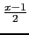

suivant: Les splines naturelles: spline
monter: Les polynômes
précédent: Listee aléatoire : ranm
Table des matières
Index
Interpolation de Lagrange : lagrange interp
lagrange a comme argument deux listes de longueur n ou une
matrice de deux lignes et n colonnes et eventuellement le
nom de la variable var (par défaut x):
la première liste (ou ligne) correspond à des valeurs d'abscisses xk, et
la deuxième liste (ou ligne) correspond
à des valeurs d'ordonnées yk pour k allant de 1 à n.
lagrange renvoie une expression polynômiale P(var) de degré
n-1 tel que
P(xk) = yk.
On tape :
lagrange([[1,3],[0,1]])
Ou on tape :
lagrange([1,3],[0,1])
On obtient :
(x-1)/2
en effet pour x = 1 on a
 = 0 et pour x = 3 on a
= 1.
On tape :
lagrange([1,3],[0,1],y)
On obtient :
(y-1)/2
Attention
lagrange([1,2],[3,4],y) ne renvoie pas une fonction mais une expression.
mais on peut définir une fonction en mettant :
f(x):=lagrange([1,2],[3,4],x) ou
f(y):=lagrange([1,2],[3,4],y) et alors
f(4) renvoie 6 car f(x)=x+2)
Bien voir la différence entre :
g(x):=lagrange([1,2],[3,4]) et
f(x):=lagrange([1,2],[3,4],x).
g(x):=lagrange([1,2],[3,4]) ne definit pas une fonction,
par exemple, g(2)=x-1+3 alors que f(2)=4.
Ceci dit, la définition of f n'est pas efficace car le polynôme sera
recalculé depuis le
début à chaque appel de f (quand on définit une fonction le membre
de droite n'est pas évalué, l'évaluation est faite seulement quand on
appelle f).
Pour être efficace il faut utiliser unapply:
f:=unapply(lagrange([1,2],[3,4]),x) ou
f:=unapply(lagrange([1,2],[3,4],y),y)
suivant: Les splines naturelles: spline
monter: Les polynômes
précédent: Listee aléatoire : ranm
Table des matières
Index
Documentation de giac écrite par Renée De Graeve